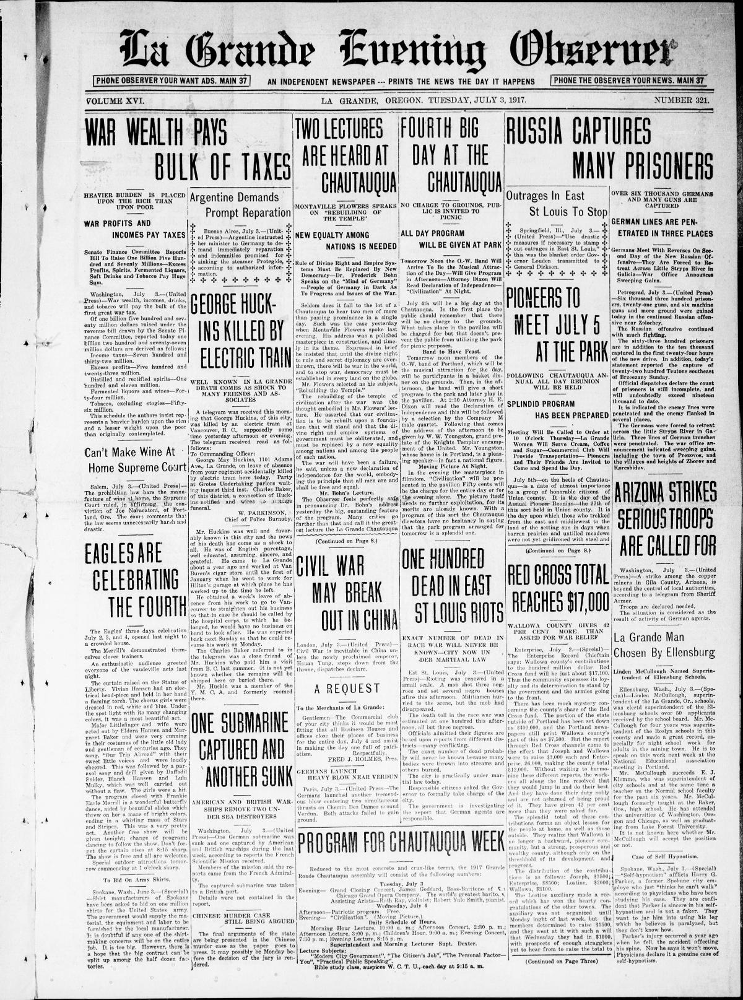

HN-405: East St. Louis killings reported with an uncertain death toll
HN-405 · July 4, 1917 · Civil Rights & Social Change > Racial, Ethnic & Religious Justice > Lynching and racial violence

page scanRecorded finding
Discovery narrative
Source: Jasper County Democrat, p. 2 — original page; Library of Congress NAACP exhibition.
Report: A short notice said violent attacks and fires devastated Black neighborhoods in East St. Louis, Illinois, offering 100 or more deaths as conjecture because burned structures could conceal victims. Its opening framed the event around a Black suspect's alleged killing of a white officer.
Assessment: The event was a racist massacre, not simply a balanced altercation. The Library of Congress documents 48 killed in its account, while contemporary activists and other studies offer higher disputed estimates. The article itself labels the larger immediate figure conjectural; it does not establish the ultimate total or justify attacks on Black residents.
Original archive images (6)
Authentic images retrieved from Historic Oregon Newspapers (University of Oregon), Library of Congress / Chronicling America and Hoosier State Chronicles (Indiana State Library). Article crops are located using the archive's own OCR word coordinates and rendered at native crop resolution; article clips are assembled from the archive's own article-block images; page images marked "archive tiles" are stitched from the archive's own tiled page service at its 256-px tile cap; page images marked "issue PDF" are single pages rasterised from the archive's own issue PDF, with the page chosen by matching the headline against the PDF's text layer; page scans are reduced-size access renditions. No images were generated, mocked, or retouched.

Historic Oregon Newspapers (University of Oregon)
Open larger view · Archive viewer (full resolution)

Library of Congress / Chronicling America
Open larger view · Archive viewer (full resolution)

Library of Congress / Chronicling America
Open larger view · Archive viewer (full resolution)

Hoosier State Chronicles (Indiana State Library)
Open full-resolution clip · Archive viewer (full resolution)

Historic Oregon Newspapers (University of Oregon)
Open larger view · Archive viewer (full resolution)

Library of Congress / Chronicling America
Open larger view · Archive viewer (full resolution)
Source acquisition
Status: Archive images acquired
Authentic archive-owned image renditions were retrieved for this record and are displayed above. The source-acquisition manifest preserves the original pre-acquisition feasibility assessment.
Original seed
URL (preserved verbatim): https://newspapers.library.in.gov/?a=d&d=JCDC19170704.2.20
Saved research report: Historical_Newspaper_Event_Research_403-427_2026-10-23.md
Evidence note: A newspaper report means a historical publication made a claim; it does not establish that claim as fact. Contemporary reporting is separated from later scholarly context and our own assessment.